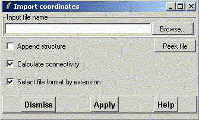
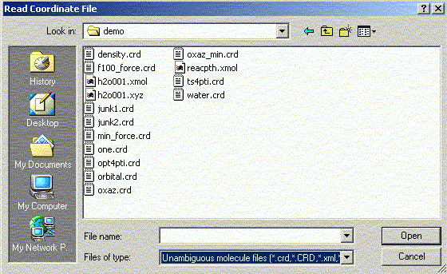
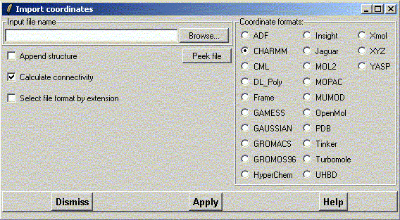

**************************************************************************
Import coordinates widget
Leif Laaksonen & Eero Häkkinen CSC 2002
**************************************************************************
This is the main facility to import atom information (including coordinates) into gOpenMol. This is almost always the first step because gOpenMol has to know the molecular topology of the system before it can plot properties or analyze trajectory information.
The supported file types can bee seen on the right side with the radio buttons. There is also a button to indicate that the next structure is added (appended) to the current display. This new structure goes into e new data structure and it is not possible to make bonds between atoms in different data structures.
With the file browser it is possible to change the directory and filter the files with special file extensions. If the user has not done any reconfiguration the default file extensions are applied. The file extensions can be changed with the define command.
A file is selected to be processed by gOpenMol either by a rapid double click on the file name or a single click on the file name and a click at the Open button.
It is possible to "Peek" or look into a file before it is imported by pressing the Peek button when a file name is defined.

The file browser is started by clicking on the Browse button.

If you are using a file extension that is not by default known to gOpenMol you can unclick the "Select file format by extension" and you get the list of supported gOpenMol input readers.
The USER option for the input filters is a user defined Tcl script that reads a user defined input format.
The called Tcl procedure is: lulReadUSERCoordinates FileName Action
Where the FileName is the name of the file and the variable Action must be either 0 (=no append) or 1 (=append). Depending on if the structure will be appended to the structure list of if it will be only one.
The code is in the /data/gopenmolrc.tcl file.
Line command: see import command
**************************************************************************